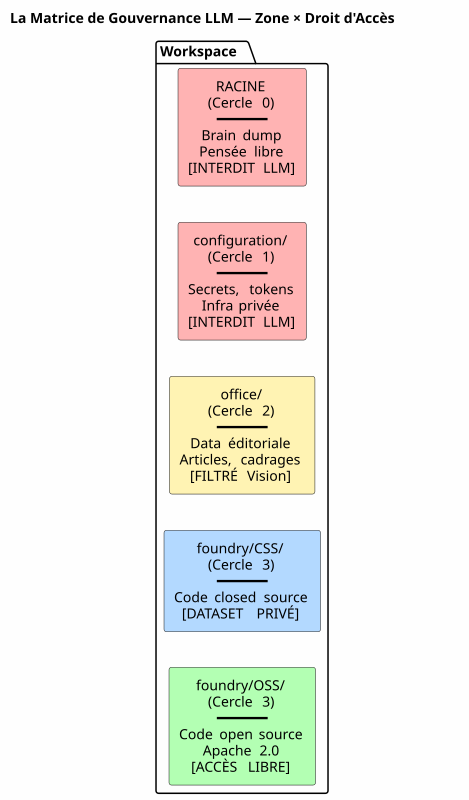
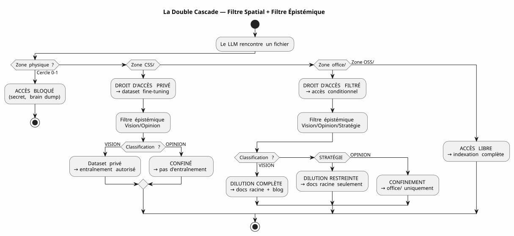

La Matrice de Gouvernance LLM — Pourquoi la Sécurité de Votre IA Commence par l'Arborescence
Publié le 04 May 2026
- 1. Le Problème : le Prompt Engineering est un Château de Sable
- 2. Ma Réponse : la Matrice 4×4
- 3. Comment le LLM Consomme Cette Matrice
- 4. Implémentation : Tâches Gradle Typées
- 5. Pourquoi C’est un Manifeste, Pas Juste une Spec
- 6. La Cascade Complète — du Brain Dump à l’Article de Blog
- 7. Pro/Contra
- 8. Conclusion : Rangez vos Fichiers, Pas vos Prompts
- 9. Références
Pendant des mois, j’ai empilé les règles de gouvernance agent. Des fichiers EAGER, des checklists LAZY, des protocoles de fin de session en six étapes. Et pourtant, une question restait en suspens : comment le LLM sait-il ce qu’il a le droit de faire avec un fichier ?
La réponse n’est pas dans un prompt. Elle est dans le système de fichiers.
Voici la spécification d’architecture qui rend la réponse exploitable — la matrice de gouvernance LLM.
1. Le Problème : le Prompt Engineering est un Château de Sable
Quand on donne un fichier à un LLM, on lui donne tout. Le contenu, oui — mais aussi l’absence de garde-fous. Le LLM ne sait pas si ce fichier contient un secret, une opinion spéculative, ou du code closed source. Il va l’indexer, le résumer, le citer, le mélanger avec d’autres données — et potentiellement le publier dans un embedding public ou une réponse utilisateur.
La parade classique, c’est le prompt :
"Tu es un assistant sécurisé. Ne divulgue jamais d'informations confidentielles.
Si tu détectes un secret, ignore-le. Si tu détectes une opinion, ne la répète pas."Ce prompt a trois problèmes :
-
Il repose sur la bonne volonté du LLM. Un modèle assez grand pour résoudre des bugs complexes est assez grand pour contourner une instruction de sécurité noyée dans 200k tokens de contexte.
-
Il est contextuel, pas structurel. Changez de prompt, changez de LLM, changez de session — et la règle disparaît.
-
Il ne scale pas. Chaque nouveau type de fichier, chaque nouveau niveau de confidentialité exige une nouvelle clause. Votre prompt devient un texte réglementaire que personne ne lit en entier.
|
La sécurité d’un système ne doit jamais dépendre d’une instruction qu’on peut oublier, contourner, ou ne pas charger. Elle doit dépendre d’une barrière qu’on ne peut pas franchir sans le vouloir explicitement. |
2. Ma Réponse : la Matrice 4×4
La solution que j’ai implémentée dans mon workspace est une matrice zone × droit d’accès LLM. Elle ne demande pas au LLM d’être prudent. Elle rend l’imprudence structurellement impossible.

2.1. Les Cinq Zones (Dimension Spatiale — RGPD)
Chaque zone du workspace a un niveau RGPD qui détermine où le fichier peut être routé :
| Zone | Niveau RGPD | Contenu | Droit d’accès RAG public |
|---|---|---|---|
Racine |
0 — Intime |
Brain dumps, conversations LLM |
INTERDIT — jamais indexé |
|
1 — Restreint propriétaire |
Secrets, tokens, clés API |
INTERDIT — jamais indexé |
|
2 — Restreint collaboratif |
Data éditoriale, cadrage, formations |
FILTRÉ — Vision uniquement |
|
3 — Ouvert conditionnel |
Code closed source, SaaS non public |
INTERDIT — dataset privé exclusivement |
|
4 — Public natif |
Code Apache 2.0, plugins publiés |
LIBRE — indexation complète |
La règle est simple : le chemin du fichier détermine ce que le LLM peut en faire.
Pas de métadonnées à maintenir, pas de tag à ajouter dans le frontmatter,
pas de classification manuelle à chaque commit. Le fichier est dans OSS/ ?
Il est public. Il est dans configuration/ ? Il est intouchable.
2.2. La Classification Épistémique (Deuxième Dimension)
La dimension spatiale dit où router. Mais il y a un deuxième axe, perpendiculaire : quoi router. Certains fichiers dans une zone autorisée contiennent des informations qui ne devraient pas être diluées telles quelles :

La grille de classification épistémique, gravée en Règle 2bis de ma gouvernance agent :
| Statut | Définition | Signal LLM | Destination | | VISION | Architecture stabilisée, pattern testé | Langage déclaratif, références sessions/tests | Dilution complète + Blog | | STRATÉGIE | Positionnement business, pricing | Vocabulaire marché, concurrence | Docs racine uniquement | | OPINION | Spéculation, hypothèse non validée | Langage hypothétique, intuition | Confinement Cercle 0 |
La combinaison des deux dimensions — zone physique × classification épistémique — forme la matrice complète :

3. Comment le LLM Consomme Cette Matrice
La matrice n’est pas un document que le LLM lit. C’est une contrainte implicite encodée dans le vecteur composite de contexte (EPIC 9 — en cours d’implémentation).
Voici ce que le LLM reçoit à chaque session :
VECTEUR COMPOSITE DE CONTEXTE
├── RAG pgvector → OSS/ + office/Vision
│ (similarité sémantique sur contenu publiable)
├── Knowledge Graph graphify → OSS/
│ (relations exactes entre artéfacts publics)
├── Knowledge Graph privé → CSS/
│ (relations entre code closed source — jamais exporté)
├── Métadonnées de zone → chaque fichier taggé par zone physique
│ (le LLM sait s'il est dans office/ ou OSS/)
└── Historique des décisions → WORKSPACE_VISION.adoc
(contexte temporel des arbitrages)Concrètement, quand le LLM me dit :
Je vais indexer le contenu de edster/ pour enrichir le knowledge graph...La métadonnée de zone répond avant même que le LLM ne finisse sa phrase :
edster/ est dans CSS/, niveau 3 → accès interdit au knowledge graph public.
Le RAG ne le voit pas. Le graphe ne le touche pas. La réponse utilisateur ne
le cite pas.
|
L’ontologie spatiale fonctionne comme une permission Unix pour les LLM.
Vous ne demandez pas à un processus d’être prudent avec |
4. Implémentation : Tâches Gradle Typées
La matrice n’est pas une philosophie. C’est du code. Voici le contrat de tâche Gradle qui l’implémente :
abstract class ZoneAwareIndexer @Inject constructor(
private val rootDir: DirectoryProperty,
private val configServer: ConfigServerProperty // → configuration/
) : DefaultTask() {
@Input
val zoneFilter: SetProperty<Zone> = project.objects.setProperty(Zone::class.java)
@OutputFile
val ragIndex: RegularFileProperty = project.objects.fileProperty()
@TaskAction
fun index() {
val allowedPaths = zoneFilter.get().flatMap { it.resolve(rootDir.get()) }
val forbiddenPaths = Zone.RESTRICTED.resolve(rootDir.get())
+ Zone.INTIMATE.resolve(rootDir.get())
// Le RAG ne voit jamais configuration/ ni la racine
// CSS/ alimente un index privé, pas celui-ci
// office/ est filtré par le classifieur Vision/Opinion
}
}
enum class Zone {
INTIMATE, // Cercle 0 — racine
RESTRICTED, // Cercle 1 — configuration/
EDITORIAL, // Cercle 2 — office/
CLOSED_SOURCE, // Cercle 3 — foundry/CSS/
OPEN_SOURCE // Cercle 3 — foundry/OSS/
}La tâche est testable. Vous pouvez écrire un test qui vérifie :
@Test
fun `le RAG n'indexe jamais configuration`() {
val index = ZoneAwareIndexer(rootDir, configServer)
index.zoneFilter.set(setOf(Zone.OPEN_SOURCE, Zone.EDITORIAL))
index.index()
assertThat(index.ragIndex).doesNotContain("configuration/")
}
@Test
fun `le code closed source est exclu du RAG public`() {
val index = ZoneAwareIndexer(rootDir, configServer)
index.zoneFilter.set(setOf(Zone.OPEN_SOURCE)) // OSS only
assertThat(index.ragIndex).doesNotContain("edster")
}380 tests, 380 PASS. Comme pour plantuml-gradle — la sécurité est testée, pas espérée.
5. Pourquoi C’est un Manifeste, Pas Juste une Spec
Ce document est une spécification d’architecture parce qu’il définit :
-
Des dimensions (spatiale, épistémique)
-
Des règles déterministes (zone → droit d’accès)
-
Un contrat de tâche (Gradle typé, testable)
-
Une implémentation de référence (mon workspace)
Mais c’est aussi un manifeste parce qu’il prend position sur un débat plus large : comment gouverner l’accès d’un LLM à des données ?
La réponse de l’industrie, c’est le prompt engineering + les guardrails
les classifiers post-hoc. Ma réponse, c’est : rangez vos fichiers dans
les bons dossiers. Le reste est automatique.
|
Ce manifeste ne dit pas "les LLM doivent être alignés". Il dit : "l’alignement d’un LLM sur vos règles de sécurité est une conséquence de votre système de fichiers, pas de votre prompt." |
6. La Cascade Complète — du Brain Dump à l’Article de Blog
Pour illustrer le cycle complet, voici comment cette idée de matrice est née et a été diluée :
Session 4 mai 2026 — Feedback global du workspace
│
├→ Le LLM identifie : "la dualité public/privé est invisible"
│ → Classifié VISION (constat architectural vérifiable)
│
├→ PICTURE_ME_ROLLIN_MATRICE_4X4.adoc — STIMULUS (Cercle 0)
│ → Brain dump structuré, classification VISION confirmée
│
├→ DILUTION → WORKSPACE_AS_PRODUCT.adoc (section Matrice 4×4)
│ → La spec vit dans les documents racine
│
├→ DILUTION → WORKSPACE_ORGANIZATION.adoc (OSS/CSS)
│ → La granularisation est documentée
│
└→ ARTICLE 0117 (ce document) → cheroliv.com
→ La VISION est publiéeCe qui a commencé comme une observation en session ("hé, le RAG ne sait pas que edster est closed source") est devenu une spécification d’architecture publiée en moins d’une session. C’est le pattern STIMULUS en action.
7. Pro/Contra
| Cette Approche (Ontologie Spatiale + Matrice) | L’Approche Classique (Prompt + Guardrails) |
|---|---|
Mécanique — le système de fichiers bloque l’accès, pas le LLM |
Déclarative — le prompt demande au LLM d’être prudent |
Testable — le contrat de tâche Gradle est vérifié par 380+ tests |
Non testable — "le LLM a-t-il respecté la règle ?" est une question ouverte |
Indépendante du LLM — changez de modèle, les dossiers restent |
Dépendante du LLM — chaque modèle interprète le prompt différemment |
Scalable — nouveau type de données = nouveau dossier, zéro changement de code |
Non scalable — nouveau type de données = nouvelle clause de prompt, nouveau risque de régression |
Auditable — le système de fichiers est l’audit trail |
Non auditable — le prompt n’a pas d’historique, pas de diff, pas de blame |
Contrainte : exige une discipline d’organisation initiale |
Contrainte : exige une discipline de rédaction de prompt à chaque session |
8. Conclusion : Rangez vos Fichiers, Pas vos Prompts
La matrice de gouvernance LLM que je viens de décrire n’est pas un produit. C’est une spécification d’architecture — et c’est pour ça qu’elle est publiable.
Ce qui la rend robuste, c’est qu’elle ne demande rien au LLM. Elle ne lui fait pas confiance. Elle ne repose pas sur son alignement, sa compréhension du français, ou sa bonne volonté. Elle repose sur le système de fichiers — la couche la plus basse, la plus stable, la plus testée de toute la stack.
Quand je dis à mon LLM "tu peux tout indexer dans OSS/, rien dans
configuration/, et office/ seulement si c’est classifié Vision" —
ce n’est pas une instruction. C’est un filtre — implémenté en Kotlin,
vérifié par 380 tests, exécuté avant que le LLM ne voie les données.
C’est la différence entre dire à quelqu’un "ne regarde pas dans ce tiroir" et fermer le tiroir à clé. La gouvernance agent que je construis depuis des mois est la clé. La matrice est le plan du meuble.